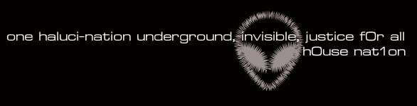

hahah b1t is back with another reality check
to defacers with a message i give you props because theres no point otherwise
to defacers with no message heh, we sent monkeys to space years ago didnt you hear?
welcome to the year 2000
united we stand . divided we fall. unite
"the future is bought with the present" - unknown
"everywhere i look i see only my own desires" hari dass baba
"he who tells the truth says almost nothing" porchia
" if he wants to work on himself he must destroy his peace. to have them both is in no way possible. a man must make a choice. but when chosing the result is very often deceit, that is to say, a man tries to deceieve himself. in words he choses work but in reality he does not want to lose his peace. such submission is the most difficult thing there can be for a man who thinks that he is capable of deciding anything" - ouspensky
eye yam b1t
feel my groove?
HITLER CREW: hahah..FINAL ROUND:
FIGHT
well be back...